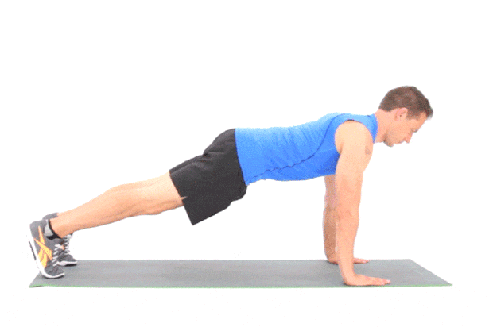

Entrenamiento para ectomorfos
Atributos de ectomorfos: Menor capacidad para soportar mucho volumen de entrenamiento y Proceso de recuperación más lento
El entrenamiento de un ectomorfo debe estar mucho más orientado a la intensidad, con ejercicios compuestos, multiarticulares, que exijan esfuerzo. Por ejemplo estan: sentadillas, peso muerto, press militar….
Pocos (pero algunos) ejercicios de aislamiento. Si bien la mayoría de los ejercicios deben ser compuestos, es posible que sea beneficioso dedicar algunos minutos a trabajar ciertos músculos individuales
Foco en fuerza y masa muscular:
Hay diferentes teorías sobre cómo crecen los músculos, y dos estrategias asociadas: 1) bajas repeticiones con altas cargas o 2) altas repeticiones con bajas cargas. Si eres ectomorfo, te recomiendo trabajar ambas.
Minimiza el cardio:
Largas sesiones aeróbicas sólo conseguirán frenar tu progreso muscular. Muchas veces se recomiendan sesiones de cardio a media intensidad para quemar grasa, pero te irá mucho mejor con una sesión intensa de entrenamiento por intervalos a la semana
Maximiza la recuperación:
La recuperación no depende únicamente del tiempo entre entrenamientos, sino también de la alimentación en el período de recuperación, el descanso adecuado, la hidratación (evita bebidas estimulantes)
Recomendaciones de Suplementos:
Proteína de suero: Un batido de después del entreno, con una buena mezcla de proteína y carbohidrato, ayudará en la recuperación muscular y te acercará a tu cuota diaria de calorías.
Creatina: Vimos que los músculos almacenan cierta cantidad de fosfocreatina, que se convierte casi inmediatamente en ATP para realizar movimientos rápidos, de corta duración. Si logras almacenar más creatina, tendrás más energía, podrás hacer alguna repetición extra y por tanto generar más sobrecompensación muscular
Es necesesario descansar 25 segundos entre cada ejercicio, en caso del primer ejercicio solo se necesitan descansar 10 segundos
Rutina Pectorales:
30 segundos de salto de tijera
Descansar 10 segundos y continuar con el siguiente ejercicio
6 flexiones con inclinacion
Descansar 25 segundos y continuar con el siguiente ejercicio
4 flexiones

Descansar 25 segundos y continuar con el siguiente ejercicio
4 flexiones con brazos abiertos
Descansar 25 segundos y continuar con el siguiente ejercicio
6 Triceps en silla
Descansar 25 segundos y continuar con el siguiente ejercicio
4 flexiones con brazos abiertos
Descansar 25 segundos y continuar con el siguiente ejercicio
4 flexiones con inclinacion
Descansar 25 segundos y continuar con el siguiente ejercicio
4 triceps en silla
Descansar 25 segundos y continuar con el siguiente ejercicio
4 flexiones con apoyo de rodillas
Descansar 25 segundos y continuar con el siguiente ejercicio
20 segundos estiramiento de cobra
Descansar 25 segundos y continuar con el siguiente ejercicio
20 segundos estiramiento de pecho
Nuestras Membresias

Dietas
Durante 3 meses te damos un plan de dieta a seguir, esto sin ningun costo,despues de los 3 meses tiene un costo de 150 pesos la membresia, si no ve resultados no le cobraremos

Ejercicios
Te damos acceso a un plan de ejercicios seguido por expertos durante 3 meses, si no ve resultados en este tiempo junto con la dieta, no le cobramos nada